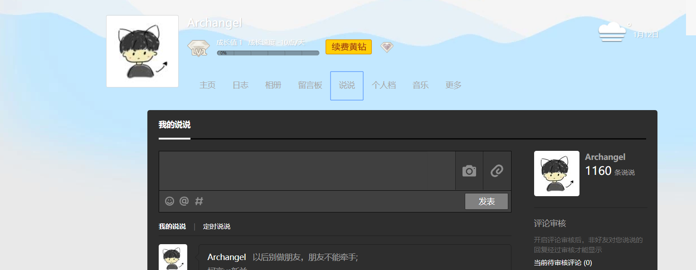
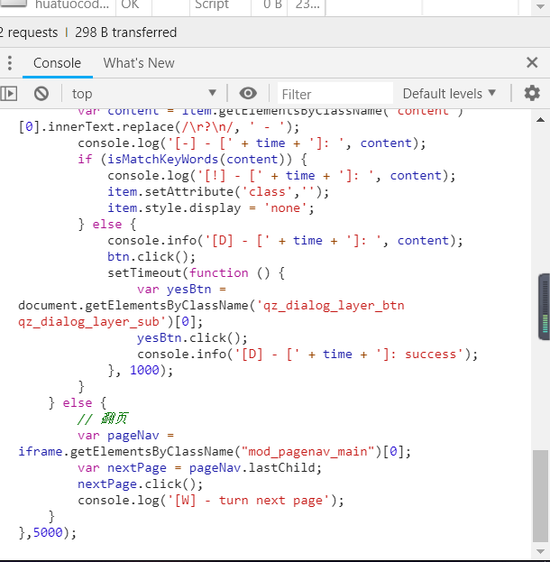
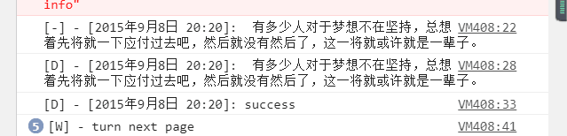

前段时间打算删除QQ空间的说说，编写了一个脚本，删了一年分的说说就没删了，想想都是记忆，今天一朋友问我，分享出来。
实现原理
本脚本通过 F12 也就是调试模式往网页中注入代码来实现控制网页的操作，按这个思路也可以通过 Selenium 来实现。
脚本主要功能：5秒钟删除一个帖子，支持过滤关键字。
实现代码
以下代码，keywords 部分可以写不删的帖子的关键字，区分大小写。
1
2
3
4
5
6
7
8
9
10
11
12
13
14
15
16
17
18
19
20
21
22
23
24
25
26
27
28
29
30
31
32
33
34
35
36
37
38
39
40
41
42
43
44
|
setInterval(function () {
var keywords = ['ATD','跨年','No'];
var isMatchKeyWords = function (match) {
for (var i in keywords) {
if ( match.indexOf(keywords[i]) > -1) return true;
}
return false;
};
var iframe = document.getElementById('app_canvas_frame').contentWindow.document;
var items = iframe.getElementsByClassName('feed');
if (items.length > 0) {
var item = items[0];
var btn = item.getElementsByClassName('del del_btn author_display')[0];
var time = item.getElementsByClassName('c_tx c_tx3 goDetail')[0].getAttribute('title');
var content = item.getElementsByClassName('content')[0].innerText.replace(/\r?\n/, ' - ');
console.log('[-] - [' + time + ']: ', content);
if (isMatchKeyWords(content)) {
console.log('[!] - [' + time + ']: ', content);
item.setAttribute('class','');
item.style.display = 'none';
} else {
console.info('[D] - [' + time + ']: ', content);
btn.click();
setTimeout(function () {
var yesBtn = document.getElementsByClassName('qz_dialog_layer_btn qz_dialog_layer_sub')[0];
yesBtn.click();
console.info('[D] - [' + time + ']: success');
}, 1000);
}
} else {
var pageNav = iframe.getElementsByClassName("mod_pagenav_main")[0];
var nextPage = pageNav.lastChild;
nextPage.click();
console.log('[W] - turn next page');
}
},5000);
|
使用方式
打开QQ空间网页版本，选择我的说说，页面大致如下：

滑倒页面底部，按快捷键F12，调出Console，输入以上代码即可，一页删完后会跳转到下一页。

删除效果:
